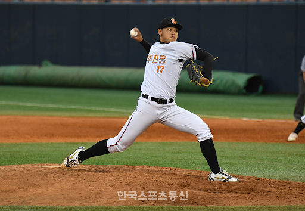

무등중에서 진흥고로 진학했다. 처음에는 그렇게 주목 받지 못 했지만 경쟁자 광주동성고 우완투수 신헌민의 부진으로 주목받게 되었다. 매 경기마다 평균 구속 140km/h, 최고 구속 148km/h를 기록하면서 많은 사람들이 관심을 가졌다. 그에 대해 자세히 다룬 기사는 이 곳을 참조하자. 2021년 2월 중순, 진흥고에서 진행된 라이브피칭에서 최고 151km/h까지 기록하는 모습을 보였다.  2022 KBO 신인드래프트에서 광주동성고 우완 투수 신헌민, 유격수 김도영, 순천효천고 포수 허인서와 함께 KIA 타이거즈 1차지명 후보군에 이름을 올리고 있다.